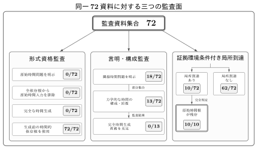

章内目次
7.4 監査72資料の横断結果
資料別完全監査から、原始時間根、原始時間根依存成果、監査到達域外成果および時間生成責務の横断結果を導く。
定義 7.1 の72資料からなる有限監査資料集合を、資料横断監査の量化域とする。
表 16 の各行は、同定義の有限監査資料集合に属する一資料 に対して、原始時間根集合 と、原始時間根および成果依存を証明する補遺命題を対応させる。資料横断命題の証拠は、この72行と各行が参照する補遺命題である。


命題 7.186 (監査72資料における原始時間根の全称残存).
また、任意のについて


が成立する。
証明.


命題 7.187 (監査72資料における原始時間根依存成果の全称残存).
したがって、任意のについて

が成立する。


命題 7.188 (監査72資料における監査到達域外成果の分解).


および

が成立する。
さらに、任意のについて


および

が成立する。
証明.


命題 7.189 (局所到達による完全判定の非変更).

局所到達時間内容集合が非空である資料は、DeWitt 1967、Misner–Thorne–Wheeler 1973、Weinberg 1989、Isham 1993、Kuchař 1992、Connes–Rovelli 1994、Kiefer 2005、Kiefer 2009、Rovelli 2011およびAnderson 2012の十資料である。残る62資料の局所到達時間内容集合は空である。
一方、72資料のすべてについて

が成立する。したがって、十資料の局所到達は、非時間的物理入力からの完全生成を成立させず、完全判定における原始時間根を除去しない。
証明.

定理 7.190 (監査72資料の原始時間根・成果依存横断定理).


が成立する。
また、任意のについて


が同時に成立する。
すなわち、監査72資料のいずれも、資料内で用いる時間内容の全体を非時間的物理入力から生成していない。
証明.


命題 7.191 (監査72資料の時間生成責務計数).
定義 7.10 の原始時間入力と、補遺の資料別監査結果に基づく計数は次のとおりである。
-
1.
原始時間問題を明示的に定式化する資料は である。
-
2.
原始時間入力を全依存根から排除する資料は である。
-
3.
非時間的物理入力から完全な時間生成を与える資料は である。
-
4.
時間内容の生成以前に少なくとも一つの時間的依存根を使用する資料は である。
-
5.
外部・独立時間の不在、時間の基礎性、時間概念の定義困難、または内在・関係的時間の構成を明示する資料は である。
-
6.
内在時間、関係的時間、熱時間または半古典的時間を力学的に構成・回復する方式を掲げる資料は である。
-
7.
前項の十三資料のうち、原始時間入力の排除から物理時間成立資格までの完全時間生成責務を充足する資料は である。


証明.
表 16 の各資料区画について、形式入力、最初の時間的依存根、監査生成時間内容、原始時間根、原始時間根依存成果および言明証拠を照合する。
定理 7.190 により、72資料のすべてに原始時間根と原始時間根依存成果が存在し、資料内で用いる時間内容の全体を非時間的物理入力から生成する資料は存在しない。これにより第二項から第四項を得る。
原始時間問題の明示には、単一の外部変数の不在だけでなく、時間、順序、時計、履歴、変化率および因果順序を代行する時間的依存根の同定、その全依存根からの排除、非時間的物理入力から時間内容へ至る生成経路の構成、ならびに評価成功と物理時間成立資格の分離を、時間生成が満たすべき課題として定式化することが必要である。表 16 の言明証拠と形式入力をこの条件に照合すると、第一項を得る。
第五項が数えるのは、各資料が自らの分析として述べる時間の不在・基礎性・定義困難、または内在・関係的時間の構成である。該当する18資料は、表16の資料6、12、14、19、25、26、29、30、33–35、43、47、54–55、59、63、72である。Heisenberg 1958資料は、時間創造を述べる語が時間関係を先取りするという定義困難を述べる。
第六項の力学的構成・回復は、時計候補となる力学変数、部分系、配置、履歴または状態から、内在・関係的・熱的・半古典的な時間変数、時間流または時間発展関係を与える方式を指す。該当する13資料は、同表の資料14、19、26、29、30、33–35、43、47、54–55、59である。各方式の成立域は、補遺の資料別言明、形式構成およびその条件による。各13資料の形式入力と原始時間根を照合すると、完全時間生成責務を充足する資料は存在しない。これにより第五項から第七項を得る。 ∎
系 7.192 (時間問題の言明と完全時間生成の判定差).
前命題の第五項に列挙した時間問題を明示すること、または第六項の力学的な時間構成・回復方式を掲げることは、監査72資料において完全時間生成の成立を含意しない。
証明.
命題 7.191 の第五項から第七項を適用する。 ∎

命題 7.193 (監査72資料における生命適用の直接実証範囲).
命題 7.185 の生命適用言明を含む七資料について、相対論的条件を分離した実験構成のもとで生命過程を直接の測定対象とする資料は である。

さらに、定義 7.1 の監査72資料について、相対論的条件を分離した実験構成のもとで生命過程を直接の測定対象とする資料は である。
証明.
命題 7.185 により、生命適用言明を含む七資料と、Bailey et al. 1977、Hafele–Keating 1972a/1972bおよびPound–Rebka 1960資料の直接測定対象は、異なる証拠段階へ属する。
表 16 の72行が参照する補遺の資料別成果、成果依存および原典位置証拠を照合する。直接測定として記録される対象には、ミューオン崩壊寿命、崩壊電子計数、セシウム時計の指示差・時計率・帰還後表示偏差、電磁放射の相対周波数差、共鳴透過計数および較正量が含まれる。
同じ72資料の生命適用言明は、脈拍、思考、癌の発生、人体の加齢、双子の年齢、人間の寿命、生物時計および人間の心臓を適用対象として述べる。これらの生命過程を実験対象に含め、相対論的条件を分離し、生命過程の測定手続と測定結果を与える資料は72行に含まれない。したがって、七資料および監査72資料について表示した計数を得る。 ∎
系 7.194 (生命適用言明と直接実証範囲の分離).
7.4.1 時間内容分類と構造署名の資料横断結果
命題 7.195 (時間内容五型分類の被覆).
監査資料集合の時間内容集合は

を満たす。各資料について

証明.
命題 7.196 (成員八軸分類の全域性).
各および

に対して

証明.
表 26 において、成員型の642件は一個以上の軸の添字集合に属する。したがって各成員の八軸分類像は一個以上の軸を含む。 ∎
命題 7.197 (構造署名の一意分解).
各資料の署名写像 および により、資料タグ付きの成員型642件と依存内容型1313件は、それぞれ八つの署名値に従って一意に分類される。


証明.


命題 7.198 (零繊維の原典証拠対応).
成員構造署名の零繊維69件および依存内容構造署名の零繊維133件には、それぞれ原典の定義・数式・明示的記述の証拠位置が対応する。残る573成員には移送事象または成果前提への出現が対応し、残る1180依存内容には成員との移送到達または成果前提への出現が対応する。